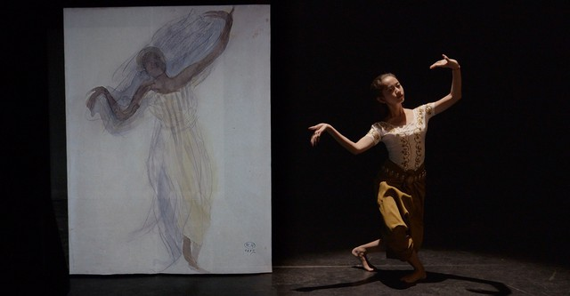

ថែរក្សាវប្បធម៌ខ្មែរ ឱ្យស្ថិតស្ថេរគង់វង្ស
គេហទំព័រនេះត្រូវបានបង្កើតឡើងក្នុងគោលបំណងលើកតម្កើង និងអភិរក្សសម្រស់នៃរបាំប្រពៃណីខ្មែរ។ តាមរយៈការអប់រំ ការនិទានរឿង និងបទពិសោធន៍តាមរូបភាព យើងសង្ឃឹមថានឹងជំរុញឱ្យមនុស្សជំនាន់ក្រោយ ស្រឡាញ់ និងយល់ដឹងកាន់តែច្បាស់អំពីបេតិកភណ្ឌវប្បធម៌ដ៏សម្បូរបែបរបស់កម្ពុជា។
ហេតុអ្វីបានជារបាំមានសារៈសំខាន់?
បេតិកភណ្ឌ
ជាស្ពានភ្ជាប់ដ៏រស់រវើកទៅកាន់អរិយធម៌ខ្មែរបុរាណ។
អត្តសញ្ញាណ
ជាការបង្ហាញពីវប្បធម៌ខ្មែរ និងមោទនភាពជាតិ។
ប្រវត្តិសាស្ត្រ
ជារឿងរ៉ាវ និងប្រពៃណីដែលបានបន្តពីមួយជំនាន់ទៅមួយជំនាន់។
សិល្បៈ
ជាការរួមបញ្ចូលដ៏វិចិត្ររវាងចលនា តន្ត្រី និងនិមិត្តសញ្ញាដែលមានអត្ថន័យជ្រាលជ្រៅ។
ដំណើរឆ្លងកាត់ពេលវេលា
សម័យអង្គរ
ប្រពៃណីរបាំបានរីកចម្រើនយ៉ាងខ្លាំងក្នុងសម័យចក្រភពខ្មែរ
រាជវាំង
របាំខ្មែរក្លាយជាផ្នែកសំខាន់មួយនៃព្រះរាជពិធី និងពិធីបុណ្យសំខាន់ៗ
កម្ពុជាសម័យទំនើប
មានកិច្ចខិតខំប្រឹងប្រែងជាច្រើនក្នុងការអភិរក្ស និងស្តារឡើងវិញនូវប្រពៃណីរបាំបុរាណ
មនុស្សជំនាន់ក្រោយ
បន្តជំរុញការសិក្សា ការយល់ដឹង និងការស្រឡាញ់វប្បធម៌ខ្មែរក្នុងចំណោមយុវជន